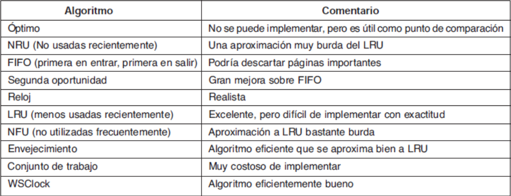
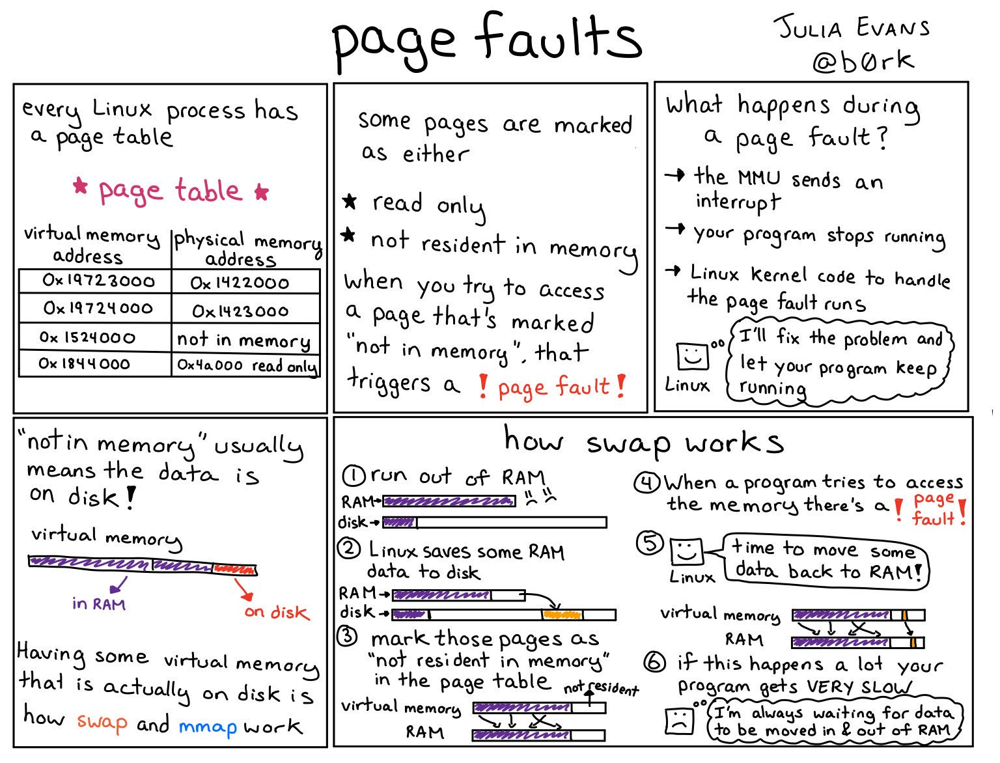

Universidad Nacional Experimental Del Táchira
Decanato De Docencia
Dpto. Ingeniería en Informática
Memoria Virtual
Código 0435607T
Contenido
- Memoria virtual.
- Fallo de página.
- Algoritmos de sustitución de páginas.
- FIFO.
- Segunda oportunidad.
- NRU (Not Recently Used)
- LRU (Less Recently Used)
- Del Reloj.
Memoria Virtual
Es un mecanismo para permitir la ejecución de procesos que no se encuentren completamente en memoria.
- Ejecutar procesos que requieren mas memoria de la disponible físicamente.
- Ayuda a los programadores a no preocuparse de las límitaciones de memoria y permite enfocarse en la funcionalidad de la aplicación.

Parte de la memoria estará en la memoria física y otra en el disco de almacenamiento.
Fallo de página e
Intercambio de página
- Cuando se usa la paginación, el S.O. conoce cuales páginas se encuentran en la memoria principal y cuales no, a través de la tabla de páginas.
- Si al solicitar el acceso a una página marcada como no disponible, significa que no está en la memoria principal. Entonces se invoca a un proceso llamado intercambio de página.
Fallo de página e
Intercambio de página
- Se selecciona una página en memoria (usando un algoritmo de sustitución de páginas), si esta tuvo modificaciones se escribe en el area de intercambio y se procesde a leer la página solicitada para realizar el intercambio de páginas.
- En caso de no existir la página en el area de intercambio se carga desde el disco duro.
Fallo de página e
Intercambio de página
- Referencia.
- Trampa.
- La página está en el almacen de respaldo.
- Carga la página que falta.
- Reestablece la Tabla de páginas.
- Reinicia la instrucción.

Proceso para realizar un intercambio luego de un fallo de página.
Algoritmos de sustitución de páginas
-
Primero en entrar, Primero en Salir (FIFO: First in - First out)
-
Segunda oportunidad
-
No usadas recientemente (NRU: Not Recently Used)
-
Menos usada recientemente (LRU: Less Recently Used)
Del Reloj
Algoritmos de sustitución de páginas
Primero en entrar, primero en salir (FIFO)
- Consiste en guardar el orden en que son cargadas las páginas, al momento de no existir marcos de página libres, retira de memoria la página mas antigua (la que llegó primero a memoria).
- Emplea una cola para almacenar la información previamente mencionada.
- Un problema de este algoritmo es que se puede quitar de memoria una página muy utilizada solo porque es la mas antigua en memoria.
Algoritmos de sustitución de páginas
Segunda oportunidad
- Es una módificacion del algoritmo anterior, literalmente le da una segunda oportunidad a las páginas antes de moverlas de la memoria principal.
- El hardware necesita tener soporte del bit de referencia para implementar este algoritmo.
- Sigue el mismo principio de FIFO, pero antes de sacar la página de memoria comprueba el bit de refencia, si esta en 001 (fijado) se cambia a 099 como si estuviese entrando de nuevo (dando una segunda oportunidad), en caso contrario, lo libera.
- Con este ligero cambio, se incrementa el rendimiento respecto al algoritmo anterior.
Algoritmos de sustitución de páginas
No usadas recientemente (NRU)
- Utiliza los 2 siguientes bits
(Se encienden por hardware y son apagados
por software):
- M: Se enciende al modificar el contenido de la página.
- R: Se enciende cuando se accede a la página.
-
Con la combinación de estos bits se crean
las siguientes clase:
- Clase 0: No solicitada, no modificada.
- Clase 1: No solicitada, modificada.
- Clase 2: Solicitada, no modificada.
- Clase 3: Solicitada, Modificada.
No usadas recientemente (NRU)
- Cada cierto tiempo, el S.O. coloca en 0 los bits de solicitud. Para actualizar el valor de solicitudes, y garantizar que cuando este encendido fue por un acceso reciente.
- El algoritmo desaloja, una página al azar de la clase mas inferior. Da prioridad a las páginas pocos referenciadas en lugar de las solicitadas frecuentemente con modificaciones.
Algoritmos de sustitución de páginas
Menos usada recientemente (LRU)
- Introducida en el año 2001.
- Es una variación del algoritmo anterior, pero lleva la cuenta de cuanto tiempo ha transcurrido desde que se modificó el bit de referencia.
- Al ocurrir un fallo de memoria, revisa cuál página ha sido usada recientemente y realiza el intercambio.
- Se puede implementar con listas dinámicas o contadores, pero ambos son métodos muy costosos y con muchas limitaciones de hardware (no se pueden implementar contadores tan grandes).
Algoritmos de sustitución de páginas
Del Reloj
- Utiliza una lista circular y un puntero que realiza la función de manecilla.
- Cada vez que ocurre un fallo de página, se chequea el valor del bit de referencia en la posición del puntero.

Si R = 0 se desaloja esa página. Si es R = 1 se incrementa la manecilla una posición.
Resumen de algoritmos de
sustitución de páginas

Sobrepaginación
- Sucede cuando un proceso invierte mas tiempo en implementando mecanismos de paginación que en su propia ejecución.
- Provoca graves problemas de rendimiento. Ejemplo: Aumento del grado de multiprogramación.
Archivos mapeados en memoria
- Imagine la lectura/escritura intensiva de un archivo del sistema. Cada acceso requiere de una llamada al sistema y una acceso al disco.
- Consiste en mapear cierta sección de la memoria (páginas) como bloques de disco, donde se ubica el archivo que se desea acceder.
Archivos mapeados en memoria
- Mientras se accede al archivo físicamente en el disco, se provocan fallos de pagina, lo que ocasiona que se vaya cargando el archivo del disco a marcos de página en la memoria principal.
- Las escrituras de estos archivos no necesariamente son síncronas (pueden requerir un commit) para aumentar el rendimiento.
Anexos
Fallo de página
{kind=link}
Fuente: Julia Evans